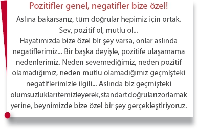
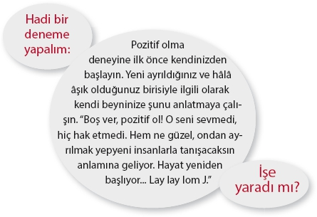

Bilinçaltının verdiği tepkiler güvenlik amaçlı
Artık siz de biliyorsunuz: Bilinçaltı çoğu tepkiyi sadece “güvenlik” amaçlı veriyor. Ve hayatımızdaki olumsuzlukların en büyük nedeni beynimizin sürekli devreye girerek bizi korumaya çalışması.
Çelişkili değil mi?
Kesinlikle!
Sanki beynimiz bize karşı, “kraldan çok kralcı!”
Sağlığa, mutluluğa, başarıya ulaşmak için yapmamız gereken, bilinçaltımıza devreye girmesine gerek olmadığını söylemek...
“Biraz sakin ol be abicimm!”
İşte bu! Bu kadar basit!

Temizlemeden yapacaklarımız boş
Belki bu kitabı okuyana kadar onlarca kişisel gelişim kitabı, pozitif düşünmeyi teşvik eden pek çok yayın okudunuz! Çok güzel. Ama maalesef yetersiz!
Eğer yeterli olsaydı dünyadaki tüm psikolojik, psikosomatik, fiziksel sorunlar zaten pozitif düşünceyle temizlenirdi.

Şimdi de kediden fobi derecesinde korkan, restoranda gördüğü an masanın üzerine çıkan bir arkadaşınıza aslında kediden korkmasının gereksiz olduğunu, onun küçük zararsız bir hayvan olduğunu, “pozitif düşünmesinin” yararlı olacağını tüm detaylarıyla açıklayın.
Bakalım ne cevap alacaksınız...
Ya da takıntılı derecede elini yıkayan birine, aslında dünyanın o kadar pis olmadığını, 10 dakikada bir elini yıkamasına, günde 10 kez evi silmesine, günde 5 kez banyoya girmesine gerek olmadığını, “pozitif düşünmesi” gerektiğini söyleyin...
Hatta nefessiz kaldığını, panik atak geçirdiğini söyleyen bir dostunuza “Ne atağı, ne paniği, bütün bunlara hiç gerek yok, sana hiçbir şey olmayacak, bunlar boş işler” şeklinde açıklamalar yapın. “Hayata biraz pozitif baksana” deyin...
Hayır, hayır şaka yapıyorum! Tabii ki demeyin... Çünkü karşınızdaki kişiyi ciddi bir şekilde kızdırmanız olası. Böyle bir şey yapmayın!
Sadece şunu anlayın:
Beynimiz bu sorunları belli tehditlere tepki ya da savunma mekanizması olarak yaratıyor. Kendi içinde bir mantığı sahip. Onun kendi içinde yarattığı mekanizmaları yani sorunları çözebilmek için yapmamız gereken iki önemli görev var:
1- Beynin neden sorunu (ona göre tedbiri) yarattığını bulmak.
2- Onun anlayacağı dilde ona “korkacak bir şey olmadığını, herhangi bir tehdidin bulunmadığını” söylemek.
Evet, pozitif düşüncenin yararı büyük, kabul ediyorum ama ne yazık ki yetersiz. Asıl çözüm temizlikle gelecek...
Hadi başlayalım!